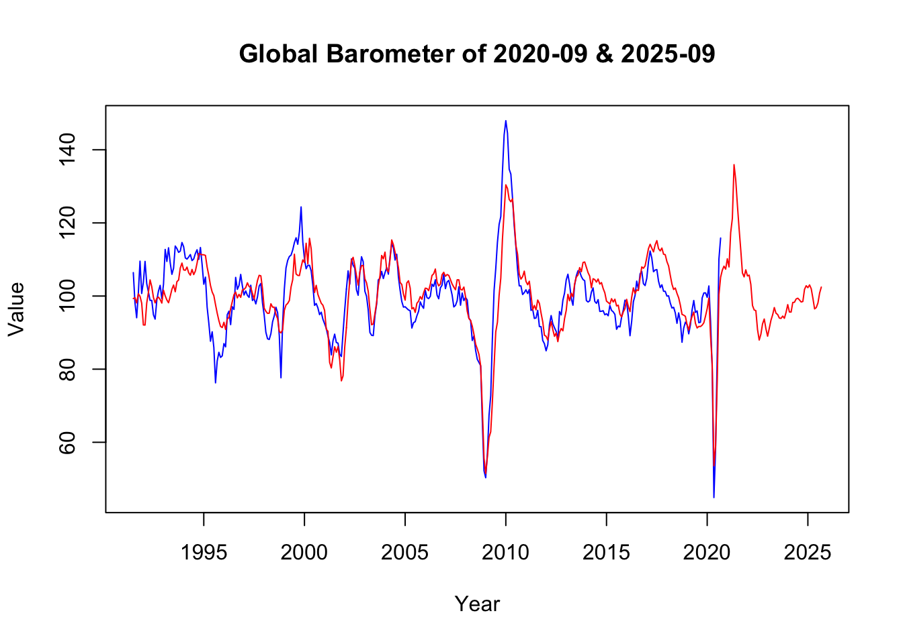
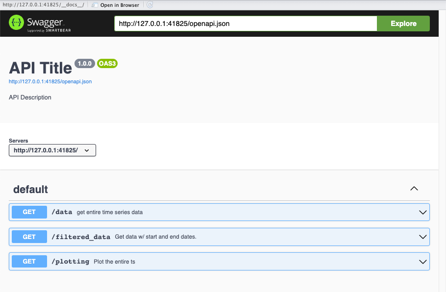
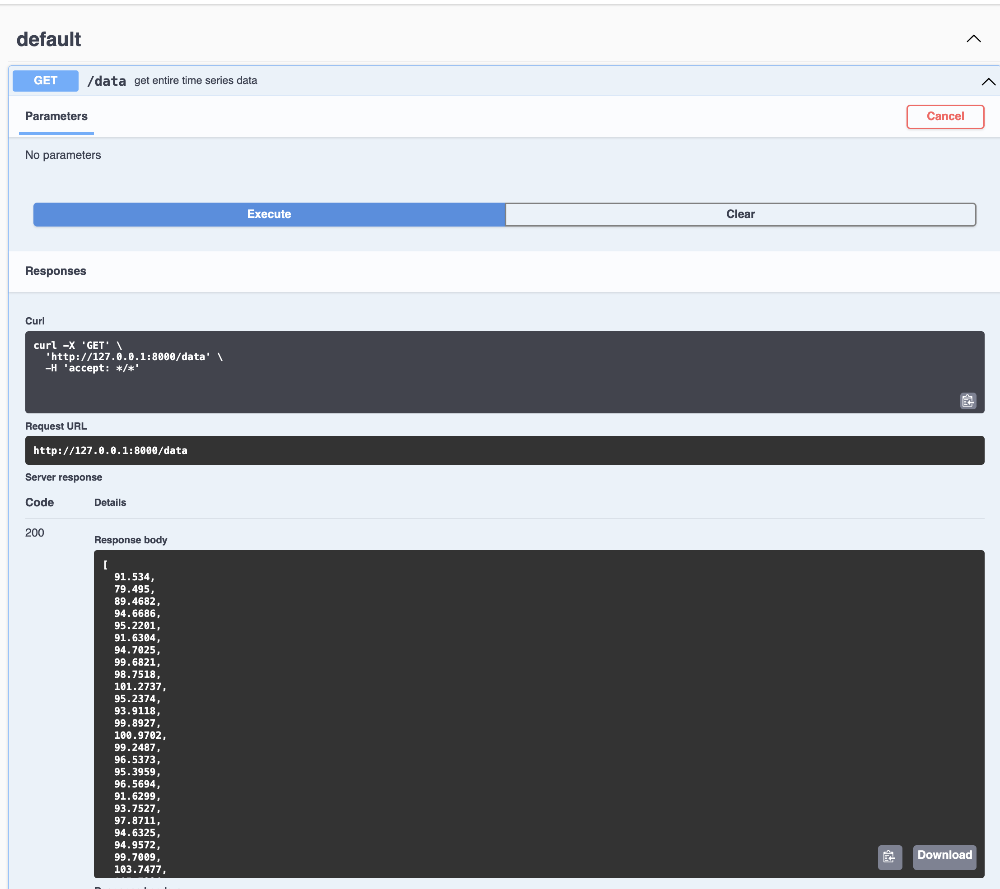
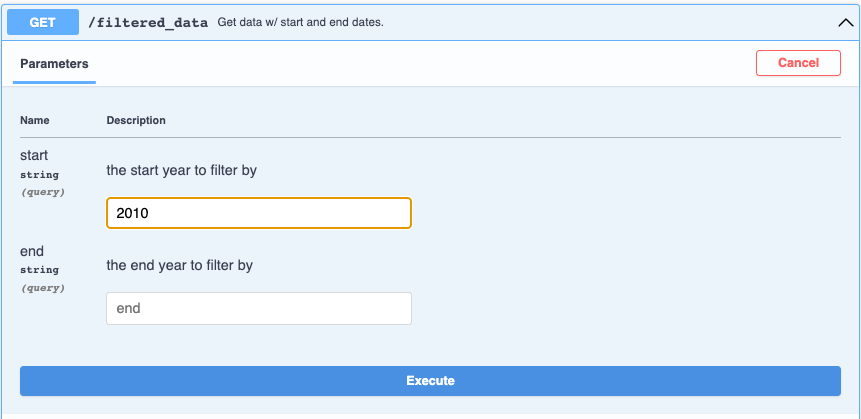
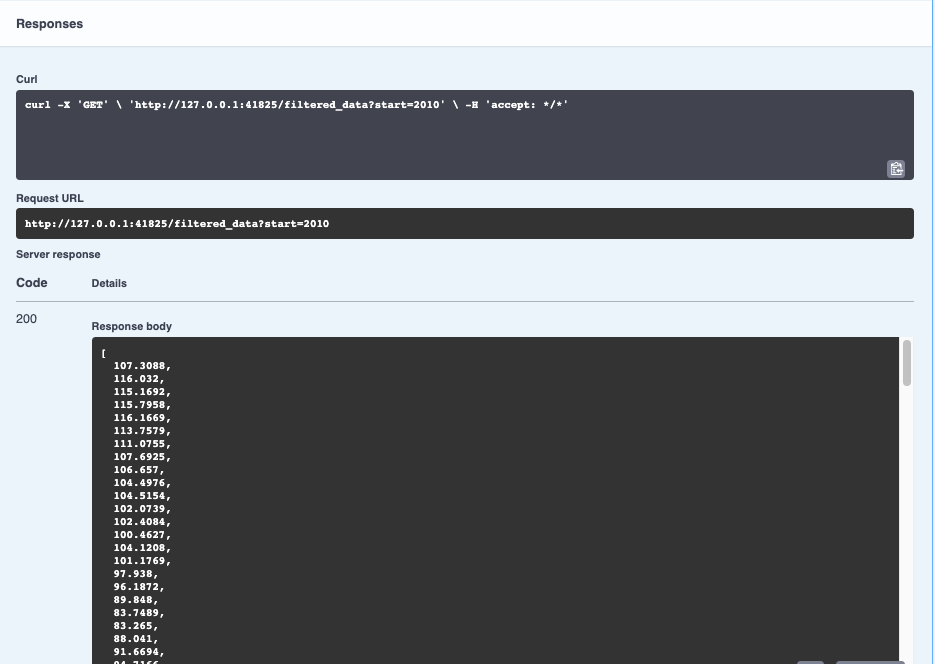

The Problem: Why Your Swiss Economic Analysis is Always Out of Date
Imagine you’re writing your Bachelor’s thesis on Swiss economic forecasting. You want to analyze how well the KOF Konjunkturbarometer (a leading economic indicator that predicts Switzerland’s near-future economic development) performs compared to actual economic outcomes.
Here’s your nightmare scenario:
You manually download the latest KOF Barometer data from the website each month
You save it as “kof_data_march.xlsx”, then “kof_data_april.xlsx”, etc.
Three months later, you realize you’ve been using an outdated version from March
Your supervisor asks: “Can you quickly update this with the latest data?”
You spend two hours re-downloading, re-formatting, and re-running your entire analysis
The KOF releases data revisions, and you have no idea which version you actually used
Sounds familiar? This is exactly why APIs exist.
The Solution: What if Data Could Update Itself?
An Application Programming Interface (API) is like having a direct phone line to the KOF database. Instead of manually visiting their website, downloading files, and hoping they haven’t changed the format or revised the data, you can simply “call” their database and say: “Give me the latest Konjunkturbarometer data, formatted exactly how I need it.”
Think of it like this:
Manual download = Going to the library, finding the right book, photocopying pages, hoping it’s the latest edition
API = Having the librarian automatically deliver the newest pages to your desk whenever you ask
This blog post will show you how APIs work in practice, why they’re everywhere in economic data, and how to use them effectively for your own research.
APIs in the Wild: How Economists Actually Use Them
Good news: you don’t have to build everything from scratch! In 2025, most major economic data providers offer APIs, including the St. Louis Federal Reserve, the Swiss Federal Statistical Office (BFS), and yes—the KOF Swiss Economic Institute.
Even better news: programmers have created API wrapper libraries that make using these APIs as simple as calling a function. Think of them as translators that speak “API language” so you don’t have to.
For Swiss economic data, you have ready-made tools like: - the kofdata R Package (for KOF data) - the BFS R package (for Swiss federal statistics) - the fredapi Python Library (for US economic data)
Example: Getting KOF Barometer Data the Smart Way
Remember our thesis scenario? Here’s how you’d solve it using the kofdata R package, which connects directly to the KOF API. Instead of manual downloads, you get live, up-to-date data with just a few lines of code:
# install.packages("kofdata")library(kofdata)baro_vint <-get_collection("globalbaro_vintages")# fetch specific data versionsbaro_2020_9 <- baro_vint$`globalbaro_leading_2020-09`baro_2025_9 <- baro_vint$`globalbaro_leading_2025-09`ts.plot( baro_2020_9, baro_2025_9,col =c("blue", "red"),gpars =list(xlab ="Year",ylab ="Value",main ="Global Barometer of 2020-09 & 2025-09" ))

The benefits of using API are the following:
Up-to-date data
Consistent format (since there is a protocol)
Reproducible research (anyone can run your code and get the same results (with access))
Easy comparisons (like comparing 2020 vs 2025 vintages above)
Your thesis supervisor asks for updated results? Just re-run your code. The KOF releases revised data? Your analysis automatically uses the latest version. This is why experienced economists swear by APIs.
But what if there’s no ready-made wrapper for the data you need? Let’s learn how APIs actually work under the hood, so you can build your own solutions.
Building Custom API Wrappers
## CHANGE THIS EXAMPLElibrary(httr)library(jsonlite)# Custom function for pre-COVID KOF dataget_kof_pre_covid <-function() { base_url <-"https://datenservice.kof.ethz.ch/api/v1/public/ts" query <-list(keys ="ch.kof.barometer",end ="2019-12-31"# Hard-coded cutoff for pre-COVID analysis ) response <-GET(base_url, query = query) data <-fromJSON(content(response, as ="text", encoding ="UTF-8"))return(data)}
Building Your Own API: Sharing KOF Data Like a Pro
Now imagine you’re working at KOF and want to share the Konjunkturbarometer data with researchers worldwide. How would you build an API like the one we just used? It’s actually not rocket science!
Understanding API Basics: The HTTP Menu System
Think of an API like a restaurant menu. When you make a request, you specify:
What you want (the endpoint, like /data)
How you want it (the HTTP method)
Any special instructions (parameters like date ranges)
The four main HTTP “verbs” are:
GET = “Give me data” (like downloading the KOF Barometer)
POST = “Store this new data” (like submitting a survey response)
PUT = “Update existing data” (like revising a forecast)
DELETE = “Remove this data” (like deleting outdated entries)
For our example & fetching data, you’ll mostly use GET requests—we’re usually retrieving and analyzing data, not modifying databases.
Example: Building a KOF Barometer API - The Basic Menu
Think of building this API and it’s endpoint as a different service your API restaurant offers, using layers, like an onion: start simple, then add layers of functionality as needed. Begin with the outermost, easiest layer:
— an “Everything Please” endpoint that returns the full time series — and show students how to save and run that in plumber (a lightweight R package that turns R functions into web APIs) before introducing the next layer. - Once the basic endpoint is working, explain why researchers might need more control (for example, requesting only pre‑pandemic data), then add a “Custom Order” layer that accepts start/end parameters and uses a helper like partition_ts to slice the series; this ordering keeps beginners from getting lost in complex control logic while giving advanced students the full implementation path.
The “Everything Please” endpoint
using the GET HTTP request
fetch the complete time series using the endpoint /data
library(plumber)#* Return entire KOF Barometer time series#* @get /datafunction() {partition_ts(data$kofbarometer)}
When you run your API, you get an interactive documentation interface (called Swagger) that looks like this:

API Endpoint Overview
We will create the 3 endpoints shown throughout this example.

The “Everything Please”
Since we just created the /data endpoint, see code snippet above, we will try it out and see the Response Body, which contains the entire Konjunkturbarometer time series.
The “Custom Order” endpoint
creates the endpoint /filtered_data which
lets users specify date ranges:
e.g. in the URL /data?start=2020&end=2024
For this, we first need to create a function partition_ts which takes the parameters the API users pass to the endpoint, i.e. a start and end date. We then partition the time series according to those parameters.
#* @param ts time series object#* @param start date at which ts should start - can be years only, or c(year, month)#* @param end date at which ts should end - can be years only, or c(year, month)partition_ts <-function(ts, start =NULL, end =NULL) {if (inherits(ts, "ts")) {# setting start and end date if unsetif (is.null(end)) { end <-time(ts)[length(ts)] }if (is.null(start)) { start <-time(ts)[1] }# filter ts based on start & end dates ts <-window(ts, start = start, end = end) } else {warning("Input is not a ts object")return(NULL) }return(ts)}
We use the partition_ts function to create our new endpoint function
#* Return KOF Barometer data with custom date range#* @param start the start year to filter by#* @param end the end year to filter by#* @get /filtered_datafunction(start =NULL, end =NULL) {if (!is.null(start)) { start <-as.numeric(start) }if (!is.null(end)) { end <-as.numeric(end) }partition_ts( data$kofbarometer,start = start,end = end )}
Let’s create our own API that shares KOF Barometer data. We’ll build endpoints where users can:
using the same endpoint from above
Get data from specific periods: /data?start=2020&end=2024
Even get a chart: /plot
Let’s test the /filtered_data endpoint by requesting KOF Barometer data from 2010 onwards:

Setting parameters for your API request
Hit “Execute” and voila—your API returns the exact data requested:

Your API returning filtered economic data
The “Visual Takeaway” endpoint
we create the /plotting endpoint
using the GET request, we return ready-made charts: